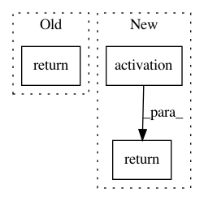

47ed18a3af8be20dce91286a331d4671074ee0ca,keras/layers/core.py,TimeDistributedDense,get_output,#TimeDistributedDense#Any#,783
Before Change
X = self.get_input(train)
output = self.activation(K.dot(K.permute_dimensions(X, (1, 0, 2)),
self.W) + self.b)
return K.permute_dimensions(output, (1, 0, 2))
def get_config(self):
config = {"name": self.__class__.__name__,
"output_dim": self.output_dim,
After Change
last_output, outputs, states = K.rnn(step, X, [], masking=False)
outputs = self.activation(outputs)
return outputs
def get_config(self):
config = {"name": self.__class__.__name__,
"output_dim": self.output_dim,
In pattern: SUPERPATTERN
Frequency: 4
Non-data size: 3
Instances
Project Name: keras-team/keras
Commit Name: 47ed18a3af8be20dce91286a331d4671074ee0ca
Time: 2015-11-26
Author: francois.chollet@gmail.com
File Name: keras/layers/core.py
Class Name: TimeDistributedDense
Method Name: get_output
Project Name: keras-team/keras
Commit Name: 6cd076a14fa163cae38ff7768daf810d851c4885
Time: 2015-04-09
Author: francois.chollet@gmail.com
File Name: keras/layers/recurrent.py
Class Name: SimpleDeepRNN
Method Name: _step
Project Name: keras-team/keras
Commit Name: b001e36f189219faf0da82ce96a748912ce46212
Time: 2016-04-26
Author: braingineer@users.noreply.github.com
File Name: keras/layers/core.py
Class Name: Dense
Method Name: call
Project Name: NifTK/NiftyNet
Commit Name: 5924176895995757c31804a0985d98e5518a758c
Time: 2018-11-07
Author: z.eaton-rosen@ucl.ac.uk
File Name: niftynet/layer/deconvolution.py
Class Name: DeconvolutionalLayer
Method Name: layer_op